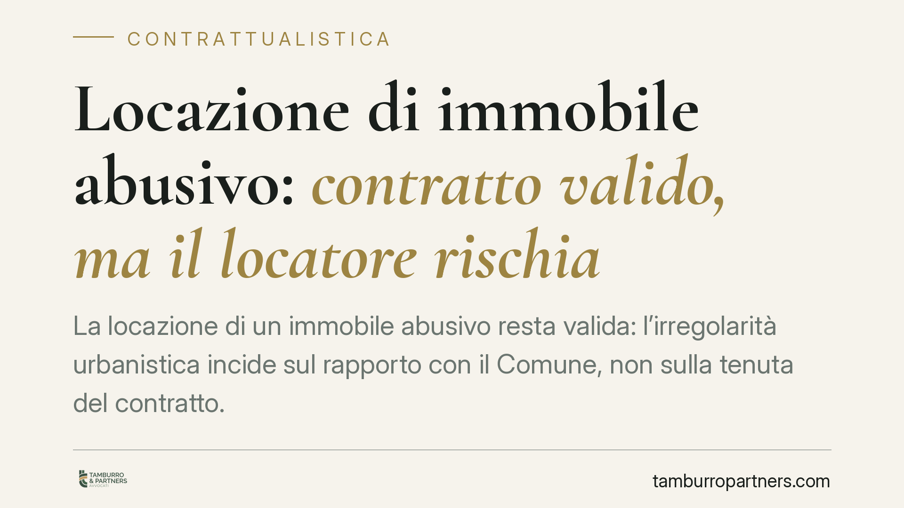

Locazione di immobile abusivo: contratto valido, ma il locatore rischia
La locazione di un immobile abusivo resta valida: l'irregolarità urbanistica incide sul rapporto con il Comune, non sulla tenuta del contratto. Lo ribadisce una recente pronuncia del Tribunale di Civitavecchia. Il locatore, però, risponde per inadempimento quando ha prestato una garanzia espressa o quando il vizio impedisce l'uso pattuito del bene. Un equilibrio che conviene conoscere prima di firmare.

Locazione di immobile abusivo: perché il contratto resta valido
Un immobile affetto da irregolarità urbanistiche può essere oggetto di un contratto di locazione valido ed efficace. È il principio ribadito dal Tribunale di Civitavecchia, che ha distinto con chiarezza due piani spesso confusi: la validità civilistica dell'accordo e la responsabilità del proprietario verso la pubblica amministrazione.
La questione della locazione di un immobile abusivo nasce da un equivoco ricorrente: si tende a ritenere che l'abuso edilizio "contamini" automaticamente ogni atto che riguarda il bene. Non è così. L'irregolarità urbanistica non travolge il contratto di affitto, ma apre un fronte sanzionatorio nei confronti del Comune, che resta estraneo al rapporto tra le parti private.
Inquadramento normativo
Il punto di partenza è l'art. 46 del DPR 380/2001 (Testo Unico dell'Edilizia). La norma prevede la nullità degli atti tra vivi aventi per oggetto il trasferimento o la costituzione di diritti reali su immobili privi dei titoli edilizi richiesti. La locazione, tuttavia, non trasferisce né costituisce diritti reali: attribuisce un diritto personale di godimento. Resta quindi fuori dal perimetro della sanzione di nullità prevista da quella disposizione.
Sul piano dei rimedi contrattuali operano invece l'art. 1575 c.c., che impone al locatore di consegnare la cosa in buono stato e di mantenerla idonea all'uso convenuto per tutta la durata del rapporto, e l'art. 1578 c.c., sui vizi della cosa locata. Quest'ultimo consente al conduttore di chiedere la risoluzione del contratto o la riduzione del canone quando il bene presenta vizi che ne diminuiscono in modo apprezzabile l'idoneità all'uso pattuito. Il coordinamento tra le due norme sposta il baricentro: ciò che rileva non è l'abuso in sé, ma la sua incidenza concreta sull'utilizzo del bene.
Implicazioni pratiche: quando il locatore risponde davvero
La distinzione ha conseguenze operative precise. L'abuso edilizio, di per sé, non libera il conduttore dagli obblighi assunti né rende invalido il contratto. Il locatore, però, risponde per inadempimento in due casi.
Il primo è la garanzia espressa: se il proprietario ha dichiarato la piena regolarità urbanistica del bene, risponde della non veridicità di quanto affermato. La promessa di una qualità poi smentita integra inadempimento contrattuale.
Il secondo è la carenza intrinseca che impedisce l'uso pattuito. Qui entra in gioco l'art. 1578 c.c.: se l'irregolarità rende il bene inidoneo allo scopo per cui è stato locato, il conduttore ha strumenti di tutela concreti.
L'esempio più evidente riguarda la locazione commerciale. Si pensi a un locale affittato per avviare un'attività che richiede autorizzazioni amministrative: se l'abuso edilizio impedisce di ottenere l'agibilità o le licenze necessarie, il conduttore non può realizzare lo scopo per cui ha firmato. In questo scenario il vizio non è teorico, ma frustra la causa concreta del contratto, e il locatore ne risponde.
Diverso è il caso di una difformità marginale, priva di effetti sull'uso abitativo o commerciale effettivo: in tale ipotesi la tutela del conduttore si affievolisce, proprio perché manca un pregiudizio apprezzabile.
Cosa fare in concreto
- Verifica preliminare della regolarità urbanistica: prima di firmare, richiedi la documentazione edilizia (titoli abilitativi, agibilità) e confrontala con lo stato di fatto dell'immobile.
- Definisci per iscritto la destinazione d'uso: indica nel contratto l'uso specifico cui il bene è destinato, così da ancorare la valutazione di idoneità a un parametro chiaro.
- Attenzione alle clausole di garanzia: se sei locatore, calibra con precisione ogni dichiarazione sulla regolarità; se sei conduttore, pretendi garanzie espresse sui profili rilevanti per la tua attività.
- Per le locazioni commerciali, verifica a monte le autorizzazioni: accerta che l'immobile consenta effettivamente di ottenere licenze e agibilità necessarie all'attività.
- Documenta lo stato dei luoghi: un verbale di consegna dettagliato riduce il margine di contestazione sui vizi e sulla loro incidenza.
La pronuncia del Tribunale di Civitavecchia conferma un orientamento ragionevole: l'abuso edilizio non è di per sé una causa di invalidità del contratto di locazione, ma può diventare fonte di responsabilità quando incide sull'uso del bene o quando il locatore ha garantito una regolarità inesistente. Conoscere la differenza aiuta entrambe le parti a misurare rischi e tutele.
Contributo informativo a cura di Tamburro & Partners Avvocati - Avv. Giuseppe Tamburro. Non costituisce parere legale.
Ogni contratto ha il suo equilibrio.
Se vuoi una revisione delle clausole o una redazione su misura, scrivi allo studio. Ti rispondiamo entro un giorno lavorativo.